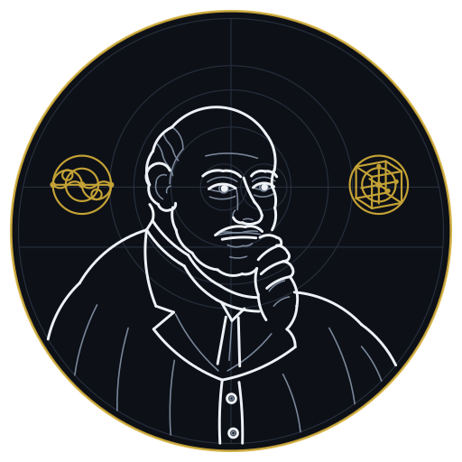

Walter & Lao Russell¶

Walter Russell (1871–1963) and Lao Russell (1904–1988) envisioned nature as a rhythmic, balanced interchange of two-way light waves—a living geometry of cubic wave-fields, spherical light-lenses, and nine-octave periodic motion. This digital archive brings together their complete 48-lesson Home Study Course (1950–1952) alongside an illustrated geometric and interactive 3D synthesis of their wave-field cosmogony.
Books in This Collection¶

Primary Edition · 1950–1952 · 12 Units · 48 Lessons
The Home Study Course — The complete twelve-unit correspondence course from the Walter Russell Foundation at Swannanoa, faithfully transcribed across 519 page-linked archival folios with 33 cropped original chalkboard diagrams embedded directly beside the lessons.

Illustrated Synthesis · 7 Chapters · 5 Interactive 3D Models
The Wave-Field Cosmogony of Walter Russell — A modern visual treatise distilling Russell’s wave mechanics, double-cone vortices, cube-sphere wave-fields, and nine-octave periodic table of the elements into 8 parametric vector plates and 5 live interactive 3D models.
Key Features¶
519 Archival Folio Scans
Every prelude, unit, and lesson links monotonically to high-resolution scans of the original 1950–1952 Swannanoa printings, with 33 original chalkboard diagrams paired directly in the text.
Interactive 3D Wave-Field Models
Rotate and inspect live WebGL models of the 6-face conical vortex, the cube-sphere and nine equators, octant light-lenses, gyroscopic precession, and the 9-octave element helix.
102-Plate & 180-Figure Concordance
Trace every diagram across the entire twelve-unit curriculum through the Complete Figure Concordance and curated glossary.
Reference & Project¶
Scholarly Apparatus
People — Biographical profiles of Walter and Lao Russell, Nikola Tesla, Dmitri Mendeleev, and Robert Kennedy Duncan
Bibliography — Archival editions, foundation publications, and historical references
Technical Glossary — Key concepts of rhythmic balanced interchange and wave-field geometry
About This Project
About — Scope, editorial methodology, and archive organization
Using This Edition — Reading guide, folio provenance links, and interactive 3D controls
Changelog & Connect — Release history and GEOMETOR community links